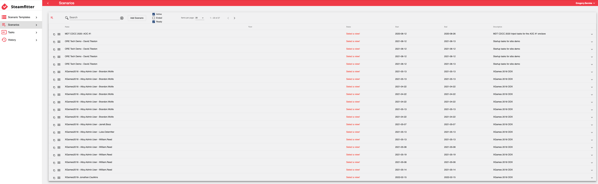

Steamfitter
Crafting a Scenario
Overview
Steamfitter gives content developers the ability to create scenarios consisting of a series of scheduled tasks, manual tasks, and injects which run against virtual machines during an event. These scenarios enable the content developer to automate assessments and configurations.
In the Steamfitter UI, there are four major functional sections:
- Scenario Templates: Used to organize tasks into groups that that can be reused on demand.
- Scenarios: Displays all planned, running, and completed scenarios.
- Tasks: User tasks used to create and execute ad-hoc tasks.
- History: Displays the results of all tasks executed by all users.
Steamfitter Permissions
In order to use Steamfitter, a user must be given Content Developer permissions by a Steamfitter System Admin. Any user who visits the Steamfitter URL is automatically added to the user list with no permissions. Only a Steamfitter System Admin can grant another user elevated permissions.
- In Steamfitter, in the top-right corner, select your user name then Administration.
- Check the ContentDeveloper box next to the name of the user.
- Select your user name then Exit Administration.
Content Developer and System Administrator within Steamfitter only apply to the Steamfitter application - not to any other application in the Crucible framework.
StackStorm Integration
Behind the scenes Steamfitter uses StackStorm (stackstorm.com) to execute these tasks. StackStorm is an open source application that can connect applications, services, and workflows. Steamfitter uses StackStorm to send commands to the guest VMs using the StackStorm vSphere Action Pack, so that none of the communication for the tasks run by StackStorm occurs over the network.
Administrator Guide
Steamfitter was developed as an administrative tool, and therefore only can be accesses with SystemAdmin permissions. Consequently, there is no user guide.
Scenario Templates

Scenario templates are where predefined tasks are grouped; scenario templates are used to create scenarios that can be run on-demand. All that is required to enter a new scenario template is a Name, Description, and Duration.
After adding the new scenario template, you can Create a Scenario, Copy a scenario template to create a duplicate, Edit it, and Delete it.
Add tasks in the Scenario Templates screen by clicking the + ("plus") icon. Complete the same task information as you did when you created a new task.
Scenarios

Scenarios are groupings of predefined tasks that can be executed against a required view's VMs.
After the tasks are defined in the scenario template the next step is to create the scenario. Keep in mind that the scenario template is the plan; the scenario is the actual instance. Multiple scenarios can be created from one template; those scenarios can then be associated with different Player views.
In the Scenarios screen, the created scenario is named scenario template name - your username by default.
Select the newly added scenario from the scenario list. Now, you can edit the Name and Description and you also have the View dropdown. A scenario must be associated with one specific Player view.
Start and End dates and times can be changed here.
As you would expect, the same tasks you attached to the scenario template appear in the scenario. Editing them in the scenario only changes them in this scenario. If you want the tasks to be changed for all scenarios based upon the template, then you will have to edit the tasks in the scenario template.
Starting a Scenario
In order for tasks to execute, a task has to be started.
If the Start Scenario button is not enabled that means that you have not associated it to a Player view.
Once started, the scenario status is now Active and a new Execute option is available in the Task context menu.
After tasks have been executed results are displayed in the task details. Each task is expandable. You will see a result listed for every single time that task gets executed.
Ending a Scenario
Scenarios can also be ended. When a scenario is started, the Start Scenario button changes to End Scenario Now.
Tasks
A task is an action or command that can be executed against one or more topology resources (that is, a VM). Each task has a result. A result is a single output that is generated when a task is executed against a single topology resource - like a single VM. A result indicates success or failure and typically includes some text describing the outcome.
A task has no results until it is executed.
A task can have multiple results:
- a task defined to run against one VM will have one result for each time the task is executed
- a task defined to run against multiple VMs will have on result per VM - each time the task is executed. So, a task that runs against four VMs and is executed three times yields 12 results.
Adding a Task
Name: What this task is supposed to do.
Description: Additional details about what the task does.
Action
-
Select an Action: Power on a VM, power off a VM, read a file, etc. An action is the name StackStorm gives to a single Task/Command.
-
Trigger Condition:
-
Time: A timed trigger is executed automatically after a set delay in seconds. A timed trigger can have multiple iterations executed on a specific interval.
- Manual: A manual trigger condition is executed by manual intervention - clicking a button, for example, to fire off a task. It's up to a user to intervene to execute the task.
- Completion: When the parent task completes the dependent task runs - regardless of success or failure.
- Success: If the expected output is contained in the actual output then the dependent task runs.
- Failure: Only runs if the expected output is not contained within the actual output.
Expected Output: Whatever you type here, if the actual output contains that text, then it is considered a success. If the output does not contain what is typed here, then it is considered a failure.
Delay / Iteration / Expiration
- Delay: Set in seconds before the task executes.
- Number of Iterations: An iteration is an execution of a task when the task is configured to iterate for x number of times. Enter the number of times you want the task to execute here.
- Interval Between Iterations: The time in seconds in between iterations.
-
Iteration Termination:
- IterationCountTask: The task will execute until exactly the number of iteration times specified above; regardless of whether the task succeeds or fails.
- UntilSuccess: The task will iterate until the command has a successful completion.
- UntilFailure: The task will iterate until the command fails.
-
Expiration Timeout: The time, in seconds, where if no response has been received the task expires (times out).
VM Selection
- VM Mask: Tasks will run against Player VMs that include the text typed here.
- Choose Actual VMs: Enable Choose Actual VMs to select specific VMs; these are the VMs found in the selected Player view.
Task Menu and Dependent Tasks
Clicking the Task Menu on the newly created task will give you the context menu for the task: Edit, Copy, Cut, New, Delete, and Execute. Selecting New here, however, creates a new dependent task. A dependent task does not execute until the condition on the parent task is met.
A task can be copied and pasted from any other scenario template, scenario, and task.
History
The default History view shows task results for the current user sorted in reverse chronological order. However, you can also view history by User, View, and VM. Sorting and filtering are also available in the history results.
Glossary
Delay: set in seconds before the task executes
Execute: to carry out the task
Expiration: when a task times out
Iteration: an execution of a task when the task is configured to iterate for x number of times
Scenario: groupings of predefined tasks that can be executed against a required view's VMs
Scenario Template: where predefined tasks are grouped; scenario templates are used to create scenarios that can be run on-demand
StackStorm: an open source application that can connect applications, services, and workflows
Task: an action or command that can be executed against one or more topology resources